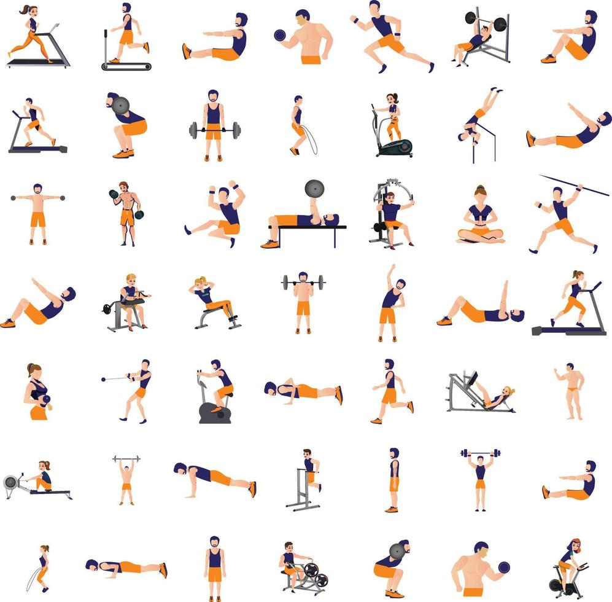

Benefícios
Contribui para o bem-estar físico, saúde mental, bom funcionamento do coração, circulação sanguínea, da respiração e até mesmo dos hormônios.
Ajuda a reduzir o estresse, atua no combate à elevação do colesterol, da diabetes e da obesidade. Fazer exercício físico também é excelente a nível psicológico, tendo inclusive um efeito antidepressivo.
Estudiosos apontam que pessoas fisicamente ativas apresentam menor risco de desenvolver problemas mentais do que indivíduos sedentários.
Importância
A importância das atividades físicas vai além da perda de peso, sendo uma parte essencial de um estilo de vida saudável, estando relacionada com a prevenção de doenças, como a hipertensão e as diabetes.
A prática de atividade física está diretamente relacionada com a melhora da qualidade de vida de uma pessoa, eles oferecem uma ampla gama de benefícios para o corpo e a mente, tanto a curto quanto a longo prazo. É importante encontrar atividades que você goste e incorporá-las à sua rotina regular.
OBS: A Organização Mundial da Saúde (OMS) recomenda que adultos pratiquem pelo menos 150 minutos de atividade física moderada ou 75 minutos de atividade física vigorosa por semana. Crianças e adolescentes devem praticar pelo menos 60 minutos de atividade física por dia.
Bons resultados com a prática de exercícios físicos
Para se conseguir resultados expressivos da prática de exercícios físicos é muito importante manter uma alimentação balanceada. Adotar uma grande variedade de alimentos é muito importante. Além disso, ajuda no fortalecimento do sistema imunológico.
Combate ao excesso de peso: O exercício fisíco acelera o metabolismo do corpo, favorecendo o gasto de energia e a queima de calorias. Melhora a qualidade do sono. Fortalece ossos e articulações: Promove o crescimento ósseo e aumenta a resistência e a densidade dos ossos, melhora a força, equilíbrio e flexibilidade Aumenta a disposição: As endorfinas, a serotonina e a dopamina liberadas durante a atividade física ajudam a aumentar a disposição, melhorar a energia, a sensação de bem-estar
Como incluir no dia a dia
Não dependa da academia para praticar atividades físicas.
O exercício pode ser feito caminhando para o trabalho, nas tarefas domésticas, durante o trabalho por meio de ginástica laboral, no tempo livre ou trocando o elevador pela escada, por exemplo.
Diminua o tempo em comportamento sedentário. Sempre que possível, durante o trabalho ou estudo, faça pausas de 5 minutos a cada 1 hora para se alongar ou caminhar.
Busque companhia para praticar exercícios físicos. Convide amigos, familiares, vizinhos, colegas de trabalho.
Supere os obstáculos para a prática de atividade física. Insista no início, até virar um hábito.
Tipos de Exercícios
- Exercícios aeróbicos
- Exercícios de flexibilidade
- Exercícios de força
- Exercícios de velocidade/agilidade
Exercícios aeróbicos
São exercícios rápidos, geralmente cansativos, que forçam o coração e os pulmões a trabalhar num ritmo acima do que lhes é habitual.Os exercícios aeróbicos mais comuns são as caminhadas rápidas, as corridas leves, a natação, o ciclismo ou as atividades de academia como os steps e os jumps
Exercícios de flexibilidade
Os exercícios de flexibilidade são os chamados alongamentos. Eles treinam os músculos a se esticarem até seu máximo e depois voltarem ao formato inicial. Assim, quando acontece qualquer situação no dia a dia ou numa atividade esportiva que exige esse estiramento, o músculo está preparado para fazer esse movimento sem sofrer danos.
Exercícios de força
Os exercícios de força são também chamados de musculação, mas, ao contrário do que muitos pensam, não são apenas para quem quer ficar com um corpo musculoso.O treino de força nada mais é que um estímulo para levar o músculo à sua capacidade máxima para peso ou carga.
Exercícios de velocidade/agilidade
A velocidade envolve a capacidade de reação ou contração do músculo, fazendo com que a pessoa consiga reagir a um estímulo prontamente. Ela não é necessária apenas para esportistas, mas pode ajudar, inclusive, em uma situação de perigo, como atravessar uma rua rapidamente ou desviar-se de um objeto qualquer.
